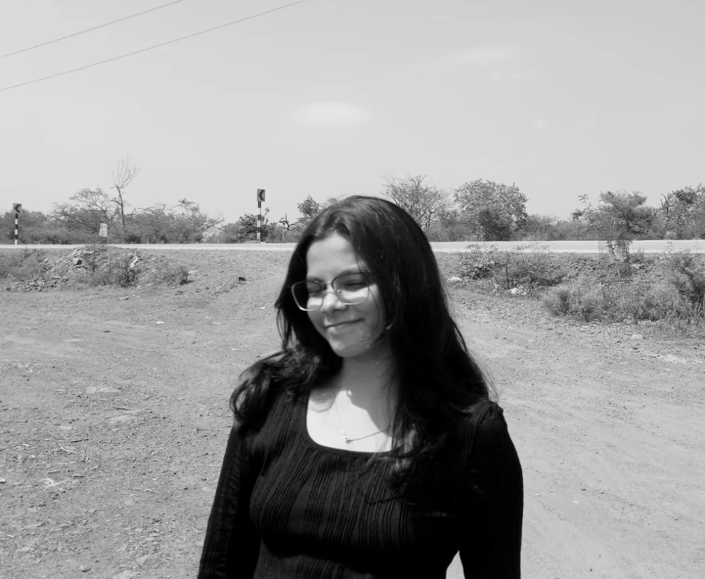

I’m a self-taught UX/UI designer focused on building simple, usable, and meaningful digital experiences. I enjoy solving problems through research, structure, and thoughtful visual design.
Currently, I’m strengthening my skills in UX design, prototyping, and front-end basics to better understand how designs translate into real products.
Download ResumeI’m interested in working on early-stage ideas and products where design thinking and usability matter.